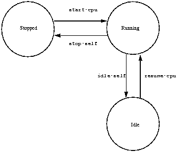

PowerPC Processor Binding
PowerPC Processor Binding to
IEEE 1275-1994
Standard for Boot (Initialization,
Configuration) Firmware
Revision: 1.10 DRAFT
April 19,1996
Table of Contents
This document specifies the application of IEEE Std 1275-1994 Standard for Boot (Initialization, Configuration) Firmware, Core Practices and Requirements to computer systems that use the PowerPC Instruction Set Architecture, including instruction-set-specific requirements and practices for debugging, client program interface and data formats. An implementation of Open Firmware for PowerPC shall implement the core requirements as defined in [1] and the PowerPC-specific extensions described in this binding.
While this document addresses the official PowerPC architecture [2], the name "PowerPC" only requires compliance to Book I. The descriptions that follow, and the relevant sections describing translation features for this binding, assume that the system's PowerPC processor(s) implement the entire set of Books I-III. Some "PowerPC" processors may implement different Book II-III features; such processors may need a variant of this binding describing the differences to the mapping functions, etc.
This standard shall be used in conjunction with the following publications. When the following standards are superseded by an approved revision, the revision shall apply.
- [1]
- IEEE Std 1275-1994 Standard for Boot (Initialization, Configuration) Firmware, Core Practices and Requirements.
- [2]
- PowerPC Architecture, published by Morgan Kaufmann Publishers, Inc. (ISBN 1-55960-316-6). Also available from IBM (Customer Reorder Number 52G7487). Updates to this document are available at http://www.austin.ibm.com/tech/ppc-chg.html
This standard uses technical terms as they are defined in the documents cited in "References" on page 7, plus the following terms:
core, core specification: refers to IEEE Std 1275-1994 Standard for Boot (Initialization, Configuration) Firmware, Core Practices and Requirements
effective address: The 64- or 32-bit address computed by the processor when executing a Storage Access or Branch instruction, or when fetching the next sequential instruction. If address translation is disabled, the real address is the same as the effective address. If address translation is enabled, the real address is determined by, but not necessarily identical to, the effective address.
linkage area: An area within the stack that is reserved for saving certain registers across procedure calls in PowerPC run-time models. This area is reserved by the caller and is allocated above the current stack pointer (%r1).
Open Firmware: The firmware architecture defined by the core specification or, when used as an adjective, a software component compliant with the core specification.
procedure descriptor: a data structure used by some PowerPC run-time models to represent a C "pointer to procedure". The first word of this structure contains the actual address of the procedure.
real address: An address that the processor presents on the processor bus.
Real-Mode: The mode in which all addresses passed between the client and Open Firmware are real addresses.
processor bus: The bus that connects the CPU chip to the system.
segmented address translation: The process whereby an Effective Address (EA) is translated into a Virtual Address (VA) and the virtual address is translated into a Real Address (RA). (See "Segmented Address Translation" on page 9. and Section 4.3 of Book III of [2] for more detail.)
Table of Contents (TOC): A data structure used by some PowerPC run-time models that is used for access to global variables and for inter-module linkage. When a TOC is used, %r2 contains its base address.
virtual address (in IEEE 1275 parlance): the address that a program uses to access a memory location or memory-mapped device register. Depending on the presence or absence of memory mapping hardware in the system, and whether or not that mapping hardware is enabled, a virtual address may or may not be the same as the physical (real) address that appears on an external bus. The IEEE 1275 definition of "virtual address" corresponds to The PowerPC Architecture's definition of "effective addres." Except as noted, this document uses the IEEE 1275 definition of virtual address.
Virtual Address (in PowerPC parlance): An internal address within the PowerPC address translation mechanism, used as in intermediate term in the translation of an effective address to the corresponding real address.
Virtual-Mode: The mode in which Open Firmware and its client share a single virtual address space, and address translation is enabled; all addresses passed between the client and Open Firmware are virtual (translated) addresses.
The cell size shall be 32 bits. Number ranges for n, u, and other cell-sized items are consistent with 32-bit, two's-complement number representation.
The required alignment for items accessed with a-addr addresses shall be four-byte aligned (i.e., a multiple of 4).
Each operation involving a qaddr address shall be performed with a single 32-bit access to the addressed location; similarly, each waddr access shall be performed with a single 16-bit access. This implies four-byte alignment for qaddrs and two-byte alignment for waddrs.
This section describes the model that is used for co-existence of Open Firmware and client programs (i.e., operating systems) with respect to address translation.
The following overview of translation is provided so that the issues relevant to Open Firmware for PowerPC can be discussed. Details that are not relevant to Open Firmware issues (e.g., protection) are not described in detail; the PowerPC architecture [2], particularly Book III, should be consulted for the details. For the scope of this section, terms will be used as defined in [2].
The default access mode of storage for load and stores (i.e., with translation disabled -- referred to as Real-Mode) within PowerPC assumes that caches are enabled (in copy-back mode). In order to perform access to I/O device registers, the access mode must be set to Cache-Inhibited, Guarded by establishing a translation with this mode and enabling translation. Thus, even though most of a client program and/or Open Firmware can run with translation disabled, it must be enabled when performing I/O.
Note: the use of the term Virtual Address in this section refers to the PowerPC definition, while the rest of the document uses the IEEE 1275 definition of virtual address. (See "References and Terms" on page 7.)
An Effective Address (EA) of a PowerPC processor is 64{32} bits wide. Each EA is translated into an 80{52}-bit Virtual Address (VA) by prepending a 52{24}-bit Virtual Segment Id (VSID) to the 28 LSbs of the effective address. On 32-bit implementations, the VSID is obtained by indexing into a set of 16 Segment Registers (SRs) using the 4 MSbs of the EA. On 64-bit implementations, the VSID is looked up in a Segment Table using the 36 MSbs of the EA. Finally, the virtual address is translated into a Real Address (RA). This is done by mapping the Virtual Page-Number (VPN) (bits 0-67{39} of the VA) into a Real Page Number (RPN) and concatenating this RPN with the byte offset (12 LSbs of the VA). The mapping of VPN to RPN involves a hashing algorithm within a Hashed Page Table (HTAB) to locate a Page Table Entry (PTE) that matches the VPN and using that entry's RPN component. If a valid entry is not found, a Data Storage Interrupt (DSI) or Instruction Storage Interrupt (ISI) is signalled, depending upon the source of the access.
This process is not performed for every translation! Processors will typically have a Translation Look-aside Buffer (TLB) that caches the most recent translations, thus exploiting the natural spatial locality of programs to reduce the overhead of address translation. 64-bit implementations may also implement a Segment Lookaside Buffer (SLB) for the same reasons. On most PowerPC processors, the TLB updates are performed in hardware. However, the architecture allows an implementation to use a software-assisted mechanism to perform the TLB updates. Such schemes must not affect the architected state of the processor unless the translation fails; i.e., the HTAB does not contain a valid PTE for the VA and a DSI/ISI is signalled.
Note: one unusual feature of this translation mechanism is that valid translations might not be found in the HTAB; the HTAB might be too small to contain all of the currently valid translations. This introduces a level of complexity in the use of address translation by Open Firmware, as discussed below.
To further reduce the translation overhead for contiguous regions of virtual and real address spaces (e.g., a frame buffer, or all of real memory), the Block Address Translation (BAT) mechanism is also supported by PowerPC. The Block Address Translation involves the use of BAT entries that contain a Block Effective Page Index (BEPI), a Block Length (BL) specifier and a Block Real Page Number (BRPN); the architecture defines 4 BAT entries for data (DBAT entries) and 4 BAT entries for instruction (IBAT entries)(1). BAT areas are restricted to a finite set of allowable lengths, all of which are powers of 2. The smallest BAT area defined is 128 KB (217 bytes). The largest BAT area defined is 256 MB (228 bytes). The starting address of a BAT area in both EA space and RA space must be a multiple of the area's length.
Block Address Translation is done my matching a number of upper bits of the EA (specified by the BL value) against each of the BAT entries. If a match is found, the corresponding BRPN bits replace the matched bits in the EA to produce the RA.
Block Address Translation takes precedence over Segmented Address Translation; i.e., if a mapping for a storage location is present in both a BAT entry and a Page Table Entry or HTAB, the Block Address Translation will be used.
Open Firmware shall use the memory resources within the space indicated by the real-base, real-size, virt-base and virt-size Configuration Variables defined for PowerPC. As described in the applicable platform binding, a mechanism is defined to enable Open Firmware to determine if its current configuration is consistent with the requirements of the client.
If the client program has specific requirements for physical memory or address space usage, it may establish requirements for Open Firmware's physical and/or virtual address space usage by means of its program header. When Open Firmware loads the client program, it inspects the program header, and if its current usage of physical memory or virtual address space conflicts with that specified in the program header, Open Firmware shall set the real-base, real-size, virt-base, and virt-size to the configuration variables as specified in the header and restart itself. Real-base, real-size, virt-base, and virt-size may be specified as -1, in which case the firmware is permitted to choose appropriate values for the variables specified as -1.
If the values of the real-size and/or virt-size configuration variables do not provide sufficient memory and/or virtual address space for the firmware's own use, then the firmware shall not attempt to load a client program and the condition should be reported to the user. The possibility of not being able to comply with limitations on firmware's size should be tested as the firmware is coming up in order to handle the possibility that a user established an unworkable limitation on the size. Clients can minimize this exposure by setting size to -1 and allowing Open Firmware to choose the size.
A PowerPC Open Firmware binding shall support two different addressing models, depending upon the setting of the real-mode? Configuration Variable. This variable indicates the Open Firmware addressing mode that a client program expects; false (0) indicates Virtual-Mode, true (-1) indicates Real-Mode; the default value of real-mode? is implementation dependent.
The management of real-mode? is analogous to little-endian?. Open Firmware determines its addressing mode using the value of real-mode?. If the current state of real-mode? (and hence, the current state of Open Firmware) is incorrect, it shall set real-mode? appropriately and reset itself, possibly by executing reset-all.
Memory that cannot be allocated for general purpose use, for example physical memory on PowerPC systems used for interrupt vectors and implementation specific areas, shall not appear in the "available" property of the memory node. A Client Program that needs to use such memory for its architected purpose must not claim that area prior to use.
In the following two sections, some of conventions in Real-Mode and Virtual-Mode address translations are described. Remaining sections describe the assumptions that Open Firmware makes about the state and control of the system in regard to Open Firmware's use of system resources for three Open Firmware interfaces (e.g. Device, User and Client interfaces).
In Real-Mode (when real-mode? is true), the use of address translations by Open Firmware and its client are independent. Either they do not use translation, or their translations are private; they do not share any translations. All interfaces between the two must pass the real address of the data. Any data structure shared by Open Firmware and its client that refers to virt addresses in [1], or this binding, must be real addresses.
Note: in particular, that the address of the Client interface handler, that is passed to the client, has to be a real address.
The Configuration Variables real-base and real-size should indicate the physical memory base and size in which Open Firmware must locate itself. In Real-Mode, the Configuration Variables virt-base and virt-size do not have meaning and should be set to -1.
When real-mode? is false, Open Firmware shall configure itself to run in Virtual-Mode. In Virtual-Mode, Open Firmware and its client will share a single virtual address space. This binding provides interfaces to allow Open Firmware and its client to ensure that this single virtual address model can be maintained.
The Configuration Variables virt-base and virt-size should indicate the virtual address space base address and size that Open Firmware should use. The Configuration Variables real-base and real-size should indicate the physical memory base and size in which Open Firmware must locate itself.
While Open Firmware is performing system initialization and probing functions, it establishes and maintains its own translations. In particular, it maintains its own Page Tables (and/or BAT entries) and handles any DSI/ISI interrupts itself.
Note: in Real-Mode, all translations will be virt=real; the primary reason for translation is to allow appropriate I/O accesses.
Open Firmware will establish its own translation environment, handling DSI/ISI interrupts as in the Real-Mode case. However, this environment will, in general, contain translations in which virtual addresses do not equal real addresses. The virtual address space used by Open Firmware must be compatible with its client.
Note: Since these virtual addresses will be used by the Client and/or User Interfaces (e.g., for pointers to its code, device-tree, etc.), their translations must be preserved until the client OS decides that it no longer requires the services of Open Firmware.
In Real-Mode, addresses of client data are real.; the client must ensure that all data areas referred to across the Client Interface are valid real addresses. This may require moving data to meet any requirements for contiguous storage areas (e.g., for read/write calls). Translation shall be disabled before the client interface call is made.
Open Firmware will typically have to maintain its translations in order to perform I/O. Since the client may be running with translation enabled (except for the Client interface call), Open Firmware shall save the state of all relevant translation resources (e.g., SDR1, BATs) and restore them before returning to the client. Likewise, it may take over interrupts for its own use (e.g., for doing "lazy" allocation of BATs); it shall preserve the state of any interrupt vectors for its client.
Since the state of the address translation system is not predictable to any interrupts, the client shall ensure that interrupts are disabled before calling the Client Interface handler and call the handler from only one CPU at a time. The client shall also ensure that other processors do not generate translation exceptions for the duration of the call.
Client programs are not required to assume responsibility for physical memory management. The client program must use the Open Firmware claim client interface service to allocate physical memory while physical memory is managed by Open Firmware. Physical memory shall remain managed by Open Firmware until the client program defines the real-mode physical memory management assist callbacks. Physical memory must be managed by the client program once the client program defines the real-mode physical memory management assist callbacks. Open Firmware shall use the client program's real-mode physical memory management assist callbacks to allocate physical memory after the client program has assumed physical memory management.
In Real-Mode, claim methods shall not allocate more pages than are necessary to satisfy the request.
Client interface calls are essentially "subroutine" calls to Open Firmware. Hence, the client interface executes in the environment of its client, including any translations that the OS has established. E.g., addresses passed in to the client interface are assumed to be valid virtual addresses within the scope of the OS. Any DSI/ISI interrupts are either invalid addresses or caused by HTAB "spills". In either case, the OS has the responsibility for the handling of such exceptions.
Note: addresses that the Open Firmware internal use will be those that were established by the Device interface (or, by subsequent actions of the Client or User interface). Thus, the client must preserve these Open Firmware translations if it takes over the virtual memory management function.
In addition to using existing translations, the Client Interface might require the establishment of new translations (e.g., due to map-in calls during open time), or the removal of old translations (e.g., during map-out calls during close time). Since this requires altering the Client's translation resources (e.g., Page Tables), possibly handling spill conditions, Open Firmware can not know how to perform these updates.
Hence, there shall be callback services provided by the client for use by Open Firmware for such actions; see section 8.5.2.
In order to let clients (i.e., target operating systems) know where Open Firmware lives in the address space, the following rules shall be followed by an Open Firmware implementation for PowerPC and by client programs.
Open Firmware:
The exit service must continue to work after a set-callback that takes over address translation. This implies that Open Firmware takes responsibility for address translation hardware upon exit and must maintain internal information about translations that it requests of the client.
Client Programs:
Note: The intended sequence is that a client program will first issue a set-callback and then take control of address translation hardware. Address translation hardware includes BAT entries, page table, segment registers, Machine State Register and the interrupt vectors relating to translation faults.
In Real-Mode, Open Firmware regains total control of the system. As with the Client interface in Real-Mode, it should save the state of the translation resources (including interrupt vectors) upon entry and should restore them upon exit.
When the User interface is invoked, Open Firmware is responsible for managing the machine. Therefore, it will take over control of any relevant interrupt vectors for its own handling. In particular, it will take over DSI/ISI handling in order to report errors to the user for bad addresses, protection violations, etc. However, as described above, one source of DSI/ISI may simply be HTAB spills. As with the case of map-in and map-out calls, the User interface can not know how to handle such spill conditions, itself, or even if this is, in fact, a spill versus a bad address.
Hence, this binding defines callback services that the client provides for use by Open Firmware; see section 8.5.2..
This section describes the standard properties of a PowerPC Open Firmware implementation.
Open Firmware requires that the multiple instances of any device that appears more than once in the device tree must be distinguishable by means of their "reg" properties. The "reg" property must express the "address" of each node relative to its parent "bus". Furthermore, the core specification says that the root node of the device tree usually represents the "main physical bus" of the system. Thus, if processors are not directly addressable on the main physical bus, as is expected to be the case on many/most PowerPC-based systems, the CPU nodes on such systems may not be children of the root node but must instead be children of a pseudo-device node. In this case, the name of the pseudo-device node, which will usually be a child of the root node, shall be "cpus".
The "cpus" node shall have one child node of device_type "cpu" for each processor.
The numerical representation of a processor's "address" in a PowerPC system shall consist of one cell, encoded as follows (Bit# 0 refers to the least significant bit):
======================================================
Bit# |33222222 |22221111 |11111100 |00000000
|10987654 |32109876 |54321098 |76543210
==============|=========|=========|=========|=========
| | | |
phys.lo cell: |00000000 |00000000 |00000000 |pppppppp
======================================================
where: pppppppp is an 8-bit integer representing the interprocessor interrupt identifier used by the platform.
The text representation of a processor's "address" shall be an ASCII hexadecimal number in the range 0...FF.
Conversion of the hexadecimal number from text representation to numeric representation shall be case insensitive, and leading zeros shall be permitted but not required.
Conversion from numeric representation to text representation shall use the lower case forms of the hexadecimal digits in the range a..f, suppressing leading zeros.
A processor's "unit-number" (i.e. the first component of its "reg" value) is the interprocessor interrupt destination identifier used by the platform. For a uni-processor platform, the "unit-number" shall be zero.
The following properties shall be created within the "cpus" node.
Standard prop-name to define the number of cells required to represent the physical addresses for the "cpu" nodes (i.e., the children of the "cpus" node).
prop-encoded-array: Integer constant 1, encoded as with encode-int.
The value of "#address-cells" for the "cpus" node shall be 1.
Standard prop-name to define the number of cells necessary to represent the length of a physical address range.
prop-encoded-array: Integer constant 0, encoded as with encode-int.
The value of "#size-cells" for the "cpus" pseudo-device node is 0 because the processors that are represented by the cpu nodes do not consume any physical address space.
For each CPU in the system, a cpu-node shall be defined as a child of "cpus." The following properties apply to each of these nodes. The "cpus" node shall not have "reg" or "ranges" properties.
Open Firmware standard property. The value of the is property shall be of the form: "PowerPC,<name>", where <name> is the name of the processor chip which may be displayed to the user.
Open Firmware standard property. The value of this property for CPU nodes shall be "cpu".
Standard prop-name to define a cpu node's unit-address.
prop-encoded-array: an integer encoded as with encode-int.
For a cpu node, the first and only value of the "reg" property shall be the number of the per-processor interrupt line assigned to the processor represented by the node. For a uni-processor platform, the value of the "reg" property shall be zero.
Standard property, encoded as with encode-int, that represents the processor type. This shall be the value obtained by reading the Processor Version Register of the CPU.
Standard property, encoded as with encode-int, that represents the internal processor speed (in hertz) of this node.
Standard property, encoded as with encode-int, that represents the rate (in hertz) at which the PowerPC TimeBase and Decrementer registers are updated.
Note: The 601 PowerPC does not have a timebase frequency, therefore on a 601 PowerPC the value reported in this property shall be 1 billion (1 x 109) which represents the logical rate of the real time clock.
prop-encoded-array: <none>
This property, if present, indicates that the PowerPC microprocessor defined by this CPU node is a 64-bit implementation of the PowerPC architecture. The absence of this property indicates that the microprocessor defined by this CPU node is a 32 bit implementation of the PowerPC architecture
prop-encoded-array: <none>
This property, if present, indicates that the PowerPC microprocessor defined by this CPU node uses the PowerPC 603 defined mechanism to update its Translation Lookaside Buffers (TLBs). The absence of this property indicates that the PowerPC microprocessor defined by this CPU node does not use the PowerPC 603 defined mechanism to update its TLBs.
prop-encoded-array: <none>
This property, if present, indicates that the PowerPC microprocessor defined by this CPU node implements the PowerPC 603 defined power management states. The absence of this property indicates that the PowerPC microprocessor defined by this CPU node does not support the PowerPC 603 defined power management states.
Standard property, encoded as with encode-int, that represents the speed (in hertz) of this processor's bus.
prop-encoded-array: <none>
This property, if present, indicates that the PowerPC microprocessor defined by this CPU node implements the "Bridge Facilities and Instructions for 64-bit Implementations" as described in an appendix of Book III of [2]. The absence of this property indicates that the PowerPC microprocessor defined by this CPU node does not support these facilities and instructions.
prop-encoded-array: <none>
This property, if present, indicates that the PowerPC microprocessor defined by this CPU node implements the emulation assist unit (EAU). The absence of this property indicates that the PowerPC microprocessor defined by this CPU node does not implement the EAU.
prop-encoded-array: <none>
This property, if present, indicates that the PowerPC microprocessor defined by this CPU node implements the External Control Facility as described in the "Optional Facilities and Instructions" appendix of Book II of [2]. The absence of his property indicates that the PowerPC microprocessor defined by this CPU node does not support the External Control Facility.
prop-encoded-array: <none>
This property, if present, indicates that the PowerPC microprocessor defined by this CPU node implements the floating point instructions fsqrt and fsqrts. The absence of this property indicates that the PowerPC microprocessor defined by this CPU node does not support the floating point instructions fsqrt and fsqrts.
Standard property, encoded as with encode-int, that represents the reservation granule size (i.e., the minimum size of lock variables) supported by this processor, in bytes.
prop-encoded-array: <none>
This property, if present, indicates that the PowerPC microprocessor defined by this CPU node implements the floating point instructions stfiwx, fres, frsqrte, and fsel. The absence of this property indicates that the PowerPC microprocessor defined by this CPU node does not support the floating point instructions stfiwx, fres, frsqrte, and fsel.
prop-encoded-array: <none>
This property, if present, indicates that the PowerPC microprocessor defined by this CPU node implements the performance monitor functionality. The absence of this property indicates that the PowerPC microprocessor defined by this CPU node does not support this performance monitor functionality.
prop-encoded-array: <none>
This property, if present, indicates that the PowerPC microprocessor defined by this CPU node implements the tlbia instruction. The absence of this property indicates that the PowerPC microprocessor defined by this CPU node does not support the tlbia instruction.
Since the PowerPC architecture defines the MMU as being part of the processor, the properties defined by Section 3.6.5 of [1] and the following MMU-related properties shall be presented under "cpu" nodes.
Standard property, encoded as with encode-int, that represents the total number of TLB entries.
Standard property, encoded as with encode-int, that represents the number of associativity sets of the TLB. A value of 1 indicates that the TLB is fully-associative.
This property, if present, shall indicate that the TLB has a split organization. The absence of this property shall indicate that the TLB has a unified organization.
Standard property, encoded as with encode-int, that represents the total number of d-TLB entries.
Standard property, encoded as with encode-int, that represents the number of associativity sets of the d-TLB. A value of 1 indicates that the d-TLB is fully-associative.
Standard property, encoded as with encode-int, that represents the total number of i-TLB entries.
Standard property, encoded as with encode-int, that represents the number of associativity sets of the i-TLB. A value of 1 indicates that the i-TLB is fully-associative.
The PowerPC architecture defines a Harvard-style cache architecture; however, unified caches are an implementation option. All of the PowerPC cache instructions act upon a cache "block" (also referred to as a cache "line"). The internal (also referred to as "L1") caches of PowerPC processors are represented in the Open Firmware device tree by the following properties contained under "cpu" nodes.
This property, if present, indicates that the internal cache has a unified organization. Absence of this property indicates that the internal caches are implemented as separate instruction and data caches.
Standard property, encoded as with encode-int, that represents the total size (in bytes) of the internal instruction cache.
Standard property, encoded as with encode-int, that represents number of associativity sets of the internal instruction cache. A value of 1 signifies that the instruction cache is fully associative.
Standard property, encoded as with encode-int, that represents the internal instruction cache's block size, in bytes.
Standard property, encoded as with encode-int, that represents the total size (in bytes) of the internal data cache.
Standard property, encoded as with encode-int, that represents number of associativity sets of the internal data cache. A value of 1 signifies that the data cache is fully associative.
Standard property, encoded as with encode-int, that represents the internal (L1) data cache's block size, in bytes.
Standard property, encoded as with encode-int, that represents the next level of cache in the memory hierarchy.
Absence of this property indicates that no further levels of cache are present. If present, its value is the phandle of the device node that represents the next level of cache.
Standard property, encoded as with encode-int, that represents the internal instruction cache's line size, in bytes, if different than its block size.
Standard property, encoded as with encode-int, that represents the internal data cache's line size, in bytes, if different than its block size.
Note: If this is a unified cache, the corresponding i- and d- sizes must be equal.
To aid a client in "taking over" the translation mechanism and still interact with Open Firmware (via the client interface), the client needs to know what translations have been established by Open Firmware. The following standard property shall exist within the package to which the "mmu" property of the /chosen package refers.
This property, consisting of sets of translations, defines the currently active translations that have been established by Open Firmware (e.g., using map). Each set has the following format:
(virt size phys mode )
Each value is encoded as with encode-int.
Some systems might include secondary (L2) or tertiary (L3), etc. cache(s). As with the L1 caches, they can be implemented as either Harvard-style or unified. Unlike the L1 properties, that are contained within the "cpu" nodes, the properties of ancillary caches are contained within other device tree nodes.
The following properties define the characteristics of such ancillary caches. These properties shall be contained as a child node of one of the CPU nodes; this is to allow path-name access to the node. All "cpu" nodes that share the same ancillary cache (including the cpu node under which the ancillary cache node is contained) shall contain an "l2-cache" property whose value is the phandle of that ancillary cache node.
Note: The "l2-cache" property shall be used in one level of the cache hierarchy to represent the next level. The device node for a subsequent level shall appear as a child of one of the caches in the hierarchy to allow path-name traversal.
Open Firmware Standard property; the device_type of ancillary cache nodes shall be "cache".
This property, if present, indicates that the cache at this node has a unified organization. Absence of this property indicates that the caches at this node are implemented as separate instruction and data caches.
Standard property, encoded as with encode-int, that represents the total size (in bytes) of the instruction cache at this node.
Standard property, encoded as with encode-int, that represents number of associativity sets of the instruction cache at this node. A value of 1 signifies that the instruction cache is fully associative.
Standard property, encoded as with encode-int, that represents the total size (in bytes) of the data cache at this node.
Standard property, encoded as with encode-int, that represents number of associativity sets of the instruction cache at this node. A value of 1 signifies that the instruction cache is fully associative.
Standard property, encoded as with encode-int, that represents the next level of cache in the memory hierarchy.
Absence of this property indicates that no further levels of cache are present. If present, its value is the phandle of the device node that represents the cache at the next level.
Standard property, encoded as with encode-int, that represents the internal instruction cache's line size, in bytes, if different than its block size.
Standard property, encoded as with encode-int, that represents the internal data cache's line size, in bytes, if different than its block size.
Note: If this is a unified cache, the corresponding i- and d- sizes must be equal.
This section describes the additional standard methods required of a PowerPC Open Firmware implementation.
The MMU methods defined by section 3.6.5. of [1] shall be implemented by CPU nodes. The value of the mode parameter for the relevant methods (e.g., map) shall be the value that is contained within PTEs that control Write-through, Cache-Inhibit, Memory-coherent, Guarded and the 2 protection bits; thus, its format is: WIMGxPP, where x is a reserved bit that shall be 0. In order for I/O accesses to be properly performed in a PowerPC system, address ranges that are mapped by map-in shall be marked as Cache-Inhibited, Guarded.
The default mode (i.e., the mode specified when the value of the mode argument is -1) for the map-in and modify MMU methods of CPU nodes is defined as follows:
If the beginning of the physical address range affected by the operation refers to system memory, the values for WIMGxPP shall be W=0, I=0, M=0, G=1, PP=10.
If the beginning of the physical address range affected by the operation refers to an I/O address, the values for WIMGxPP shall be W=1, I=1, M=0, G=1, PP=10.
A PowerPC Open Firmware implementation shall implement a client interface (as defined in chapter 6 of [1]) according to the specifications contained within this section.
To invoke a client interface service, a client program constructs a client interface argument array as specified in the core Open Firmware document, places its address in r3 and transfers to the client interface handler, with the return address in lr. (A typical way of accomplishing this is to copy the client interface handler's address into ctr and executing a bctrl.)
The term "preserved" below shall mean that the register has the same value when returning as it did when the call was made.
Table 1. Register usage conventions
=======================================================================================
Register(s) | Value -- real-mode |Value -- virt-mode |Notes
============|================================|==================================|======
msr |client interface shall preserve |client interface shall not modify |
------------|--------------------------------|----------------------------------|------
cr |client interface shall preserve |same as real-mode | 1
------------|--------------------------------|----------------------------------|------
r1-r2 |client interface shall preserve |same as real-mode |
------------|--------------------------------|----------------------------------|------
r3 |argument array address on cli- |same as real-mode | 2
|ent interface entry | |
------------|--------------------------------|----------------------------------|------
|result value (true or false) |same as real-mode | 2
|on client interface return | |
------------|--------------------------------|----------------------------------|------
r13-r31 |client interface shall preserve |same as real-mode |
------------|--------------------------------|----------------------------------|------
sprg0- |client interface shall preserve |client interface shall not modify |
sprg3 | | |
------------|--------------------------------|----------------------------------|------
fpscr |client interface shall preserve |same as real-mode |
------------|--------------------------------|----------------------------------|------
f0-f31 |client interface shall preserve |same as real-mode |
------------|--------------------------------|----------------------------------|------
lr, |undefined |same as real-mode |
ctr, | | |
xer | | |
------------|--------------------------------|----------------------------------|------
sr0-sr15 |client interface shall preserve |client interface shall not modify |
------------|--------------------------------|----------------------------------|------
Other SPRs |client interface shall preserve |same as real-mode | 3
| | |
=======================================================================================
Notes
1. Only the non-volatile fields (cr2-cr4) need to be preserved.
2. As defined by section 6.3.1. of [1].
3. Other special purpose registers
The client interface handler shall perform the service specified by the contents of the argument array that begins at the address in r3, place the return value (indicating success or failure of the attempt to invoke the client interface service) back into r3, and return to the client program. This is typically done by a Branch to Link Register (blr).
The client interface handler shall preserve the contents of the Stack Pointer (r1), TOC Pointer (r2), Condition Register (cr) all non-volatile registers (r13-r31) and all special purpose registers except lr, ctr and xer.
The preservation of r2 allows TOC-based client programs to function correctly. Open Firmware shall not depend upon whether its client is TOC-based or not. If the client interface handler, itself, is TOC-based, it must provide for the appropriate initialization of its r2.
The client's load address is specified by the value of the load-base Configuration Variable. The value of load-base defines the default load address for client programs when using the load method. Load-base shall be a real address in real mode or a virtual address in virtual mode. Note that this address represents the area into which the client program file will be read by load; it does not correspond to the addresses at which the program will be executed. All of physical memory from load-base to either the start of Open Firmware physical memory or the end of physical memory, whichever comes first, shall be available for loading the client program.
This section defines the "initial program state", the execution environment that exists when the first machine instruction of a client program of the format specified above begins execution. Many aspects of the "initial program state" are established by init-program, which sets the saved program state so that subsequent execution of go will begin execution of the client program with the specified environment.
Upon entry to the client program, the following registers shall contain the following values:
Table 2. Initial Register Values
==================================================================
Register(s) | Value |Notes
============|==============================================|======
msr |EE=0, interrupts disabled | 1
------------|----------------------------------------------|------
|PR=0, supervisor state |
------------|----------------------------------------------|------
|FP=1, floating point enabled |
------------|----------------------------------------------|------
|ME=1, machine checks enabled |
------------|----------------------------------------------|------
|FE0,FE1=0, floating point exceptions disabled |
------------|----------------------------------------------|------
|IP, see section 8.4. |
------------|----------------------------------------------|------
|IR,DR, see section 4.2.1. |
------------|----------------------------------------------|------
|SF=0, 32-bit mode |
------------|----------------------------------------------|------
|ILE,LE, little endian support | 2
------------|----------------------------------------------|------
r1 |see section 8.2.2. |
------------|----------------------------------------------|------
r2 |0 | 3
------------|----------------------------------------------|------
r3 |reserved for platform binding | 4
------------|----------------------------------------------|------
r4 |reserved for platform binding | 4
------------|----------------------------------------------|------
r5 |see section 8.2.3. |
------------|----------------------------------------------|------
r6,r7 |see section 8.2.4. |
------------|----------------------------------------------|------
Other |0 |
user mode | |
registers | |
==================================================================
Notes:
1. Open Firmware will typically require the use of external interrupts for its user interface. However, when a client program is invoked, external interrupts shall be disabled. If a client program causes the invocation of the user interface, external interrupts may be re-enabled.
2. The 601 processor uses a different mechanism for controlling the endian-mode of the processor. On the 601, the LE bit is contained in the HID0 register; this bit controls the endian-mode of both program and privileged states.
3. Open Firmware does not make any assumptions about whether a client program is TOC-based or not. It is the responsibility of the client program to set r2 to its TOC, if necessary.
4. As defined in the relevant section of the platform binding.
Client programs shall be invoked with a valid stack pointer (r1) with at least 32K bytes of memory available for stack growth. The stack pointer shall be 16-byte aligned, reserving sufficient room for a linkage area (32 bytes above the address in r1). If the system is executing in Real-Mode, the value in r1 is a real address; if in Virtual-Mode, the address in r1 is a mapped virtual address.
When client programs are invoked, r5 shall contain the address of the entry point of the client interface handler. If the system is executing in Real-Mode, the value in r5 is a real address; if in Virtual-Mode, the address in r5 is a mapped virtual address.
Note: this address points to the first instruction of the client interface handler, not to a procedure descriptor.
The calling program may pass to the client an array of bytes of arbitrary content; if this array is present, its address and length shall be passed in registers r6 and r7, respectively. For programs booted directly by Open Firmware, the length of this array is zero. Secondary boot programs may use this argument array to pass information to the programs that they boot.
Note: The Open Firmware standard makes no provision for specifying such an array or its contents. Therefore, in the absence of implementation-dependent extensions, a client program executed directly from an Open Firmware implementation will not be passed such an array. However, intermediate boot programs that simulate or propagate the Open Firmware client interface to the programs that they load can provide such an array for their clients.
Note: boot command line arguments, typically consisting of the name of a file to be loaded by a secondary boot program followed by flags selecting various secondary boot and operating system options, are provided to client programs via the "bootargs" and "bootpath" properties of the "/chosen" node.
The caches of the processor shall be enabled when the client program is called. The I-cache shall be consistent with the D-cache for all memory areas occupied by the client program. Memory areas allocated on behalf of the client program shall be marked as cacheable. Accesses to "I/O" devices (especially, to devices across "bridges") shall be made with the register access words (e.g., %rl@). All processors in a SMP system shall have the same consistent view of all memory areas (for data references). No more than one processor shall have a modified copy of the same data area in its cache when the client program is called.
Note: If firmware makes cachable M=0 data references from different processors on a SMP system, it may have to perform additional cache management to meet this requirement.
Open Firmware requires that interrupts be "vectored" to its handlers when it is in control of the processor; this will occur when the User Interface is running. Client Interface calls are considered to execute in the environment of the client, and hence, Open Firmware does not assume ownership of interrupts.
In order for Open Firmware to process interrupts in an efficient manner, an area of memory for the exclusive use by Open Firmware shall be reserved by the client program at (real) memory locations 0x1E0...0x1FF.
Open Firmware shall save and restore the first location of each interrupt that it wants to "take over". I.e., whenever Open Firmware needs the use of an interrupt, it shall save the current contents of the corresponding entry point and replace that location with a branch to its entry point. When Open Firmware returns control, it shall restore the RAM location to its original contents.
This section defines the callback mechanism that allows Open Firmware to access services exported to it by the client program. As described in section 6.3.2 and the glossary entries for callback and $callback in [1], the callback mechanism follows the same rules as those of Client interface calls. I.e., an argument array is constructed by Open Firmware and the address of that array is passed (via r3) to the client's callback routine; the address of the callback routine is supplied to Open Firmware by means of the set-callback client call.
If the system is running in Real-Mode, the address of the client callback routine shall be a real address; if it is running in Virtual-Mode, the client callback routine address shall be a mapped virtual address.
Once the control of physical memory is transferred to the client program, Open Firmware which is running in real-mode shall use the callback service provided by the client program to allocate physical memory. Client programs which expect Open Firmware to operate in read-mode must implement the following physical memory management client callback routines for Open Firmware:
alloc-real-mem
- IN: [address] min_addr, [address] max_addr, size, mode
- OUT: error, [address] real_addr
- This routine allocates a contiguous physical memory of size bytes within the address range between min_addr and max_addr. The mode parameter contains the WIMGxPP bits as defined in section 6. A non-zero error code shall be returned if the mapping can not be performed. If error code is zero (i.e. allocation is succeeded) the routine returns the base address of the physical memory allocated for Open Firmware.
As mentioned in section 4.2.6., when Open Firmware is in Virtual-Mode, client programs that take over control of the system's memory management must provide a set of callbacks that implement MMU functions. This section defines the input arguments and return values for these callbacks. The notation follows the style used in chapter 6 of the Open Firmware specification [1].
map
- IN: [address] phys, [address] virt, size, mode
- OUT: throw-code, error
- This routine creates system-specific translation information; this will typically include the addition of PTEs to the HTAB. If the mapping is successfully performed, a value of zero shall be placed in the error cell of the argument array; a non-zero error code shall be returned in error if the mapping can not be performed.
unmap
- IN: [address] virt, size
- OUT: throw-code
- The system removes any data structures (e.g., PTEs) for the virtual address range.
translate
- IN: [address] virt
- OUT: throw-code, error, [address] real, mode
- The system attempts to compute the real address (real) to which the virtual address (virt) is mapped. If the translation is successful, a PTE shall be placed into the HTAB for this translation, the number of return cells shall be four with the resulting real address returned in real and error shall be set to false (0). If the translation is not successful, the number of return cells shall be two and error shall be set to a non-zero error code.
- This call shall be made when Open Firmware handles a DSI/ISI within the User interface. A successful result of the translate call indicates that Open Firmware can complete the interrupted access; a failure indicates that an access was made to an invalid address.
An implementation of Open Firmware for PowerPC shall conform to the core requirements as specified in [1] and the following PowerPC-specific extensions.
The following user interface commands represent PowerPC registers within the saved program state. Executing the command returns the saved value of the corresponding register. The saved value may be set by preceding the command with to; the actual registers are restored to the saved values when go is executed.
The following command displays the PowerPC CPU's saved program state.
.registers
Access saved copy of Condition Register.
Access saved copy of Count Register.
Access saved copy of Link Register.
Access saved copy of the low order 16 bits of SRR1 register.
Access saved copy of Save/Restore Registers.
An alias of "%srr0"
Access saved copies of fixed-point registers.
Access saved copy of XER register.
Access saved copies of SPRG registers.
Unlike the other registers, the floating point unit registers are not normally saved, since they are not used by Open Firmware. The following access words, therefore, access the registers directly.
Access floating point registers.
Access Floating Point Status and Control Register.
In addition to the standard Configuration Variables defined by the core Open Firmware document [1], the following Configuration Variables shall be implemented for PowerPC:
This boolean variable controls the endian-mode of Open Firmware. If true (-1), the endian-mode is Little-Endian; if false (0), the endian-mode is Big-Endian. The default value is implementation dependent.
This boolean variable controls the address translation mode of Open Firmware. If true (-1), the addressing mode is Real-Mode; if false (0), the addressing mode is Virtual-Mode. The default value is implementation dependent.
This integer variable defines the starting physical address to be used by Open Firmware.
This integer variable defines the size of the physical address space which can be used by Open Firmware.
This integer variable defines the starting virtual memory address which can be used by Open Firmware.
This integer variable defines the default load address for client programs when using the load method. The default value is implementation dependent.
This section specifies the application of Open Firmware to PowerPC multiprocessor (MP) systems. An Open Firmware implementation for an MP PowerPC system shall implement the extensions described in this section as well as the requirements described in previous sections of this binding.
This section defines an additional property under the "/chosen" Node for a MP extension. Refer to Section 5.1.1. for more details about the device tree structure for a MP Configuration.
"/chosen" Node Properties
prop-name, identifies the running CPU.
prop-encode-array: An integer, encoded as with encode-int, which contains the i-handle of the CPU node that is associated with the "running" CPU.
Open Firmware shall select one processor, using an algorithm of its choice, to be the "master" processor, which performs the role of the single processor on a uniprocessor system, either booting the client or providing the user interface. Open Firmware shall place all the remaining processors into stopped state, a state in which the processor does not perform Open Firmware or client functions and does not interfere with the operation of the master processor. A processor in stopped state remains in that state unless and until an executing client starts it using the start-cpu client service defined below.
Client programs shall use the Open firmware start-cpu client interface service to start all processors before it reclaims the Open Firmware memory
On machines in which a machine check on one processor is broadcast to all processors, the processors which are either in the idle or stopped state shall not change their states due to a machine check on another processor: Open Firmware shall not depend on the contents of the low vector (IP=0) in the event of a machine check.
The following State Diagram depicts the relationship of the Running, Stopped and Idle States to each other. The Client Interface Service Calls are shown as how to move between the states.
FIGURE 1 State Diagram

Note: Open Firmware's memory cannot be reclaimed by a client if a CPU is in the "stopped" or "idle" state.
The following client interface services are added for MP support on PowerPC systems. These interfaces make the client program responsible for any Inter-CPU communication needed for these interfaces. The rationale for this is to architecturally separate the Inter-CPU communication mechanism of the firmware from the client program and vice versa.
start-cpu
- IN: nodeid, pc, arg
- OUT: none
- This client interface service starts the CPU. The nodeid is the phandle of a node whose device_type is "cpu".
- Start-cpu arranges for the CPU identified by phandle in nodeid to begin executing client code at the real address given by the pc input with an argument, arg, passed in register r3. When it begins execution, the started processor shall be in the endian mode of the client program, and in real (not translated) addressing mode. The contents of registers other than r3 are indeterminate.
- A client should not call start-cpu for the processor on which it is running, effectively restarting with a new pc and abandoning the only client thread. A jump or branch instruction shall be used instead to achieve the objective.
- start-cpu permits more than one processor to run at the same time, enabling multi-threaded client execution. In general, an Open Firmware client shall avoid multi-threaded operation within Open Firmware. Usually, this means that client threads running on different CPUs must use mutual exclusion to prevent more than one processor from making client service requests at any one time. The exceptions are that a client thread may invoke either the STOP-SELF or IDLE-SELF client services defined below at any time.
Note: The results are undefined if the CPU identified by *phandle* has already been started (e.g it is already running and has not exited) or *phandle* is not a valid package handle of a CPU device node.
stop-self
- IN: none
- OUT: none
- Open Firmware places the processor on which the caller was running into the "stopped" state. The client program is not-resumable.
Note: When an MP client program exits, one CPU invokes the EXIT client interface service, the others invoke the STOP-SELF service.
idle-self
- IN: none
- OUT: none
- Open Firmware places the CPU on which this service was invoked into an 'idle' state, saving the *current state* of the client program, so that the client program may be resumed.
- A processor in idle state can be resumed using RESUME-CPU service defined below or restarted using START-CPU. If the processor is resumed, it executes a normal return to the client, as if its call to IDLE-SELF had just completed.
Note: When a client program wants to enter the firmware user interface, one CPU invokes the ENTER client interface service, the others invoke the IDLE-SELF service. The rational is that the user interface may affect the machine state in any way that it desires, therefore the client shall not depend on it.
resume-cpu
- IN: nodeid
- OUT: none
- This client interface service is used to resume an *idled* CPU. The nodeid is the phandle of a CPU node in idle state.
- RESUME-CPU arranges for that CPU to restore the CPU's state as saved by IDLE-SELF and begin return to the client, completing the idle-self client service call that placed the CPU into idle state. The results are undefined if the CPU identified by *phandle* is not in an *idle* state by a previous call to the IDLE-SELF client interface service.
Note: When the client program is resumed via the GO (or similar) user interface command, the client program is resumed on the CPU which called the ENTER service; the client program is responsible for calling the RESUME-CPU service to resume other idled CPU's, if that is the desired client program behavior.
If the breakpoint is taken by the firmware, without the client program's assistance, the other CPUs will continue to run in the client program. The client program may field the breakpoint 'trap' or 'vector' and idle the other CPUs before entering the PROM. The platform binding document has to specify how this is done to avoid loss of state at breakpoint time.
The firmware is a single threaded program, from the client program's point of view. Only the idle-self, stop-self, enter and exit client interfaces may be invoked simultaneously on different CPUs. Furthermore, only a single CPU may invoke the enter or exit client interface at any one time. The other CPUs must use the idle-self or stop-self client interface service.
Note: The results are undefined if the client program invokes client interface services including breakpoint traps (other than the enter/exit stop-self/idle-self case listed above) simultaneously on more than a single CPU.
Note: Since locking mechanisms are subject to client program policy, the client program is responsible for implementing any necessary mechanism to insure that it adheres to this policy. Further, the client program should disable any pre-emption mechanism before calling a client interface service to avoid rescheduling a thread of execution in the firmware on a different CPU if such a mechanism exists in the client program.
Footnotes
- (1)
- The 601 has a single set of BAT entries that are shared by both instruction and data accesses.